Concepto básico
-
Teclado de flecha arriba: esto se utiliza para poner de pie al slugcat, poder trepar sogas, subir diferentes espacios pequeños y trepar por los bordes.
-
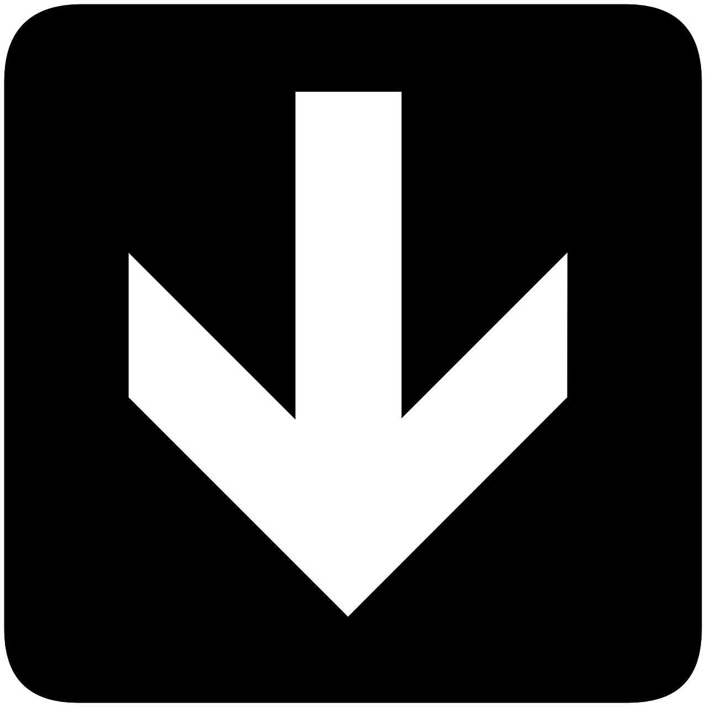
Teclado de flecha abajo: esto se utiliza para poner en agachado al slugcat, hace un ruido silencioso y, si mantiene presionado el teclado espacio, salta una gran distancia.
-
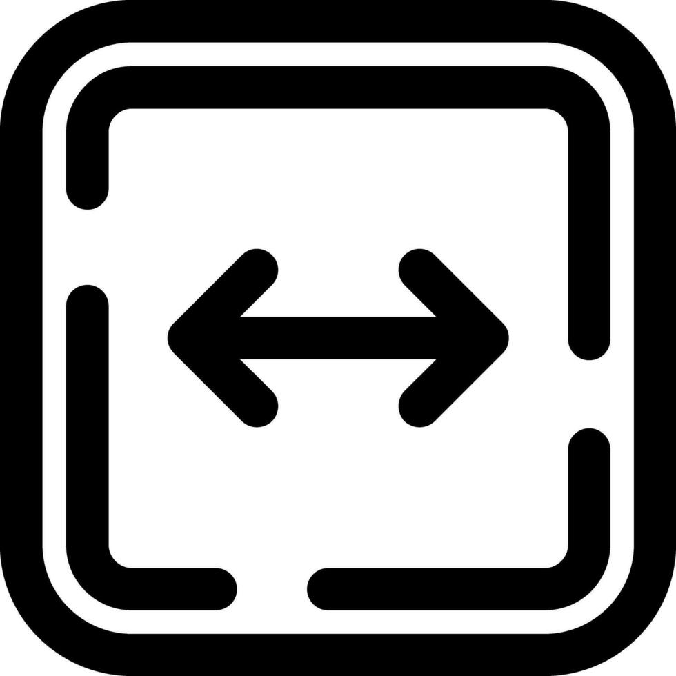
Teclado de flechas izquierda y derecha: es para un cambio de dirección y sirve para tener un agarre en las paredes.
-
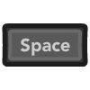
Tecla espacio : es un movimiento que ayuda a pasar diferentes obstaculos.
-
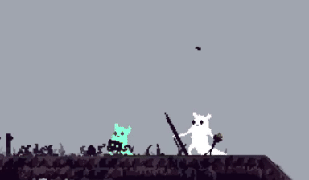
Tecla asignada por el jugador: permite el agarre de los objetos .
-
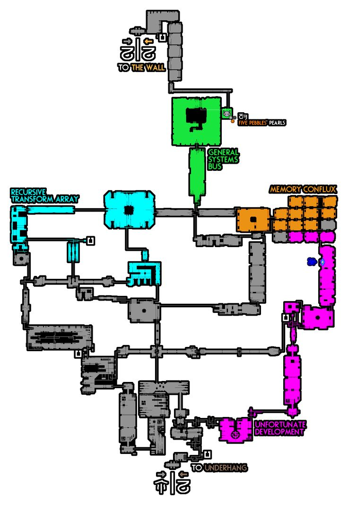
Tecla asignada por el jugador: Al matener precionado se puede observar un mapa de los recuerdos del slugcat , también nos indica el ciclo y el hambre del slugcat.
-
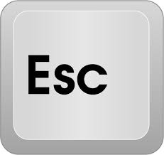
Tecla asignada por el jugador: abre el menú de pausa.
-
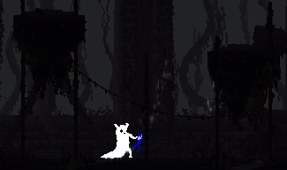
Comer: matener presionado la tecla de agarre para poder comer.
-
soltar: presiona y agarre para poder soltar un objeto de la mano derecha.
-
guardar: matener presionado el agarre para poder guardar el objeto de la mano izquierda (solo puede guardar objetos diminutos , como gemas , bombas etc) para sacarlo maten precionado.
-
cambio de mano:presionar dos veces agarre para cambiar de mano.
Gestión de obejtos
Tipos de Salto
Trepar bordes
Nos ayuda en ciertas circusntancias de escape.
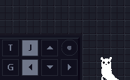cabezazo
Ayuda a escapar de los lagartos cuando hay lugares sin salida.
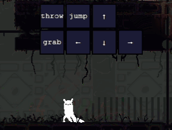Voltereta
Sirve para lanzar una lanza hacia arriba o abajo y también para esquivar.
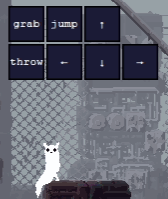Salta Muros
Nos ayuda a subir altos muros.
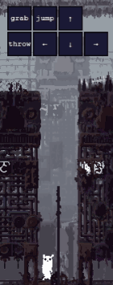Salto Mayor
Los objetos lanzados cuando estamos saltando nos ayuda a saltar largas distancias.
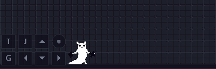Movimiento de Poste
Tiempo de reutilización de impulso
Mas rápido el uso del poste.
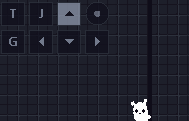soltar
soltar la soga.
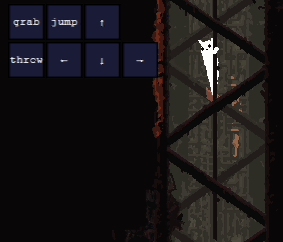Movimiento Rapido
Horizontalmente puedes saltar enciama de la sogas.
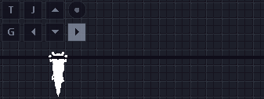Escalada Rápida
Cancela el tiempo de reutilización del impulso e inmediatamente permite otro impulso.
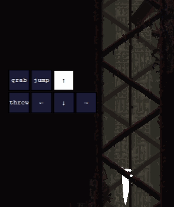Combate
Ataque Rápido
Es un ataque desprevenido donde logras hacer mucho daño pero muy difícil de realizar, es probable que le caiga en la cabeza en esa parte no le haces nada de daño.
Contra pared
Momento exacto donde se clava la lanza contra la pared junto con la criatura dejandolo indefeso.
Combinación de salto
Un gran combo que es muy dificil de realizar pero ayuda mucho para cazar.
Span de ataque
Un ataque normal y efectivo es lanzar primero una piedra luego una lanza y lanzar la lanza repetidas veces.